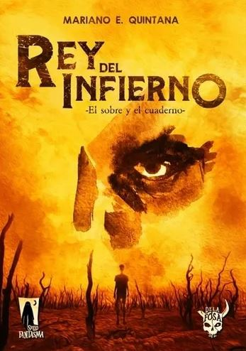

Rey del infierno: El sobre y el cuaderno
- Título: Rey del infierno: El sobre y el cuaderno
- Autor: Mariano E. Quintana
- Editorial: De la Fosa
- Año de primera edición: 2020
- Genero: Fantasía
- ISBN: 9789878648224
Sinopsis
Rey del infierno es una distopia cuyo protagonista será Daren, un niño huérfano que sufre la tiranía del poder gobernante “La religión universal” la cual secuestra niños para hacerlos prisioneros en alguna de sus fortalezas. Daren logra escapar de las garras de la Religión Universal durante un buen tiempo, pero finalmente es capturado. El niño tiene una hermana, la cual ha desaparecido hace varios años, una de sus metas será encontrarla, además de intentar mantener unido a sus pocos amigos, que resisten con él. Una de las particularidades de esta distopía es el tratamiento que se le da a los libros. La religión universal obliga a sus prisioneros a leer para adultos ciegos, pero además, las páginas de los libros son la moneda corriente del mundo. Mientras más apreciado haya sido ese libro tiempo atrás, más valiosa será cada una de sus páginas.
Opinión personal: Argumento
Para comenzar con esto trataré lo más posible de separar lo mejor que pueda el argumento y cada apartado del mundo, que es con lo que más tengo problemas. La fórmula que sigue Rey del infierno es algo básica pero que funciona en la mayoría de los casos. El protagonista buscando a su único familiar que vive y por el cual es el responsable, ya sea que haya sido secuestrado o haya partido hacia un lugar lejano por iniciativa propia, es algo aceptable. Funciona bastante bien para el avance de la trama, ayuda a conocer varios personajes, enfrentamientos con el antagonista (de existir alguno) y varios puntos importantes de toda historia. Esta parte del argumento es bastante bien llevada. Se agregan dos objetos que funcionan como vínculo para el protagonista (el título completo del libro es “Rey del infierno: El sobre y el cuaderno”) y sumado a esto el grupo de amigos, le dan muchos motivos para avanzar a la trama y lo mejor de todo, de una forma bien aplicada. El problema con el argumento es el enfrentamiento con el antagonista. Como mencioné en la sinopsis, en cierto momento Daren es capturado por la Religión universal. Es tomado prisionero en uno de sus fuertes y aquí es donde comienza la parte que no me gusta. Verán, el aspecto de prisionero de Daren es desarrollado bastante bien, el problema es lo que le obligan a hacer allí, nunca termina de convencerme. Los prisioneros son niños y pre adolescentes en su mayoría (por algún motivo que nunca es explicado, o al menos yo no lo encontré o estaba concentrado en querer terminar el libro porque a esta altura ya no me gustaba) y los guardias hombres adultos. Dentro de la prisión hay ciertos líderes entre los prisioneros, el principal es Dimitri un niño que por alguna razón es amigo de los guardias e incluso puede mandarlos a golpear al que él quiera, cual gangster mafioso pero… ¿Por qué un niño prisionero mandaría a unos guardias adultos? ¿Qué puede tener o saber él para que muchos guardias le sean leales? Se supone que la mayoría de los guardias son tan sádicos y carentes de empatía que pueden castigar físicamente a un grupo de niños ¿Qué hace Dimitri para ganárselos? Estas son algunas de las muchas preguntas que no tienen respuesta en todo el libro, o al menos yo no las he captado… aunque apuesto más por la primera opción. Luego, nuevamente sin encontrar explicación lo suficientemente convincente, ocurre algo con Daren que es un parteaguas total. No diré qué es, pero es algo que cambia todo dentro de la prisión y… siendo algo tan importante, debería tener unos mejores cimientos para que su origen no sea tan sacado de la galera del mago. Como verán, el problema que tiene este libro es dejar muchas preguntas sin responder o carecer de planteamiento previo para muchos eventos que ocurren más adelante en el libro. Y esto se repite mucho más en el mundo donde ocurre la historia. Estaba escribiendo el apartado de personajes pero he recordado algo más… Los libros. Se supone que estos son considerados como algo sagrado, como moneda corriente y son algo bastante escaso y bueno, más allá de todos los usos que se les pueda dar, sospecho que el libro fue escrito tomando de inspiración libros como “Atlántida y Lemuria”, “La divina comedia” y varios otros. Esto es obvio, ya que son algunos de los libros más nombrados e incluso se citan fragmentos de ellos; lo que quiero decir con esto es que el autor ha creado la historia para que la lea un conocedor de estos libros que se mencionan y capte todas las referencias y adaptaciones. Y bueno, al no haber leído la mayoría de los libros a los cual se hace homenaje, me he perdido de todo esto. Repito, son solo sospechas ya que no conozco los libros referenciados pero… son bastante grandes.
Puntos positivos
- Me es difícil encontrarlos. Tal vez el personaje principal y sus relaciones con los distintos chicos en la cárcel. Pero salvo eso, no encuentro mucho
Puntos negativos
- El personaje de Vladimir teniendo poder dentro de la prisión.
- Escasa descripción y ambientación.
- Mundo sin explicar con ideas que, sinceramente no encuentro forma de que se logren explicar, como que las páginas de libros sean moneda corriente o por qué hay personas ciegas dentro de la prisión.
- Siento que es un libro al que, si no has leído la mayoría de los libros que se mencionan aquí no vas a terminar de entenderlo.
Conclusión
Creo que no queda mucho por decir. Fue una gran decepción al que no le encontré casi nada bueno o salvable. Tal vez tenga razón en eso de que es un libro que necesita conocimiento previo por parte del lector sobre los libros homenajeados, pero este pre-requisito no es algo que me preocupe. Como libro de forma individual deja mucho que desear.